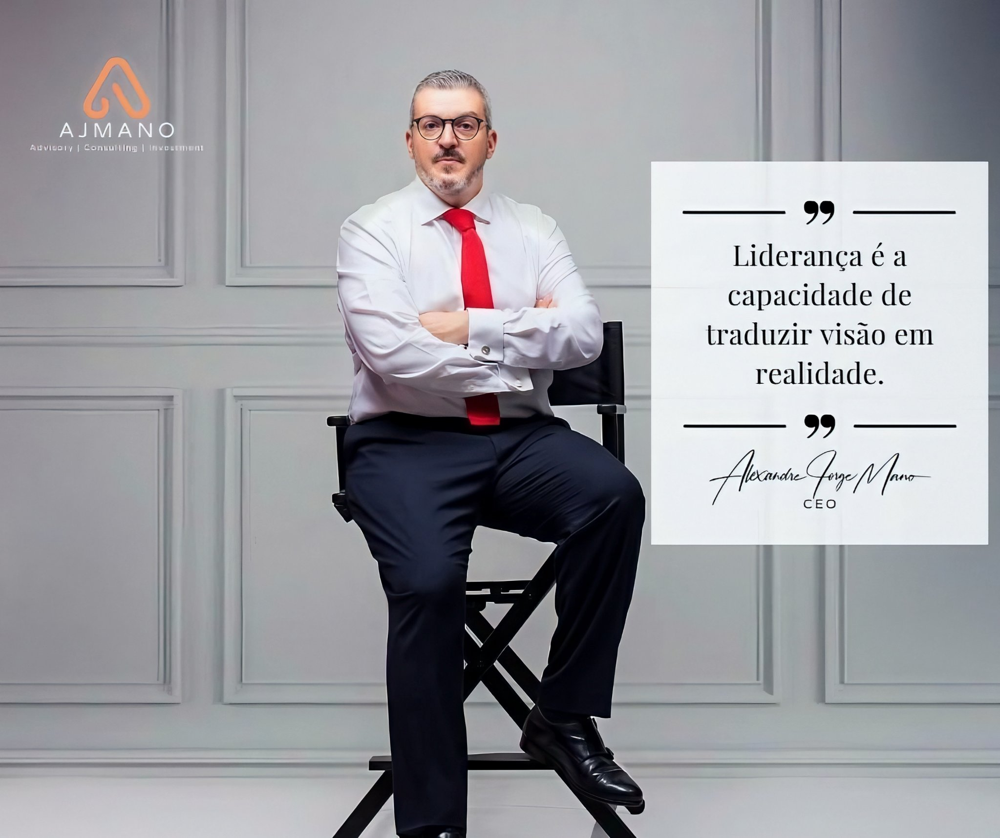

Descer
O Homem
Alexandre
Jorge Mano
Empresário, especialista em comunicação, assessor empresarial, orador e especialista em inovação disruptiva — em Maputo, Moçambique.
Alexandre Jorge Mano é o fundador e CEO da AJMANO Consultores, a empresa que criou para ligar Moçambique ao mundo: ajudar quem quer investir no país a entrar com segurança, com estratégia e com conhecimento local.
É também assessor do Ministro da Juventude e Desporto de Moçambique, Caifadine Paulo Manasse — função em que acompanhou o Ministro numa visita oficial a Portugal, dedicada à cooperação em emprego e formação profissional.
A sua forma de trabalhar é direta: visão que se traduz em realidade, trabalho feito todos os dias, mesmo quando ninguém está a ver.
A Empresa
AJMANO
Consultores
Advisory · Consulting · Investment
A AJMANO Consultores é uma empresa privada dedicada a facilitar o investimento em Moçambique. Junta conhecimento local a uma perspetiva global, para que os investidores entrem e cresçam no mercado moçambicano com segurança, confiança e resultados sustentáveis.
Posiciona-se como uma porta de entrada para o investimento estrangeiro e como uma ponte entre investidores e Moçambique — um dos mercados mais promissores de África.
Assessoria estratégica
Orientação à medida para navegar no mercado moçambicano e construir estratégias de crescimento.
Identificar oportunidades
Identificação de oportunidades de negócio e de investimento, para empresas de todas as dimensões, incluindo PME.
Estruturar projetos
Acompanhamento de projetos, da ideia à execução, com parceiros estratégicos e uma rede internacional.
Apoio legal, fiscal e regulatório
Apoio na parte legal, fiscal e regulatória, para investir com segurança e dentro das regras.
Criação e expansão de empresas
Incentivo à criação de empresas e à sua expansão internacional.
Grandes projetos
Atração de projetos de grande escala e ligação com as instituições certas, conforme cada projeto exige.
AJMANO Consulting & Advisory, Lda — Maputo, Moçambique.
O Que Faz
Empreendedor,
Consultor,
Orador
Empresário
Fundador e CEO da AJMANO Consultores, com foco em investimento, crescimento de empresas e reputação de Moçambique através de iniciativas com valor.
Especialista em comunicação
Comunicação estratégica para empresas, instituições e líderes — a mensagem certa, para o público certo.
Assessoria empresarial
Assessoria a empresas e investidores, com conhecimento local e visão global.
Orador
Palestras e intervenções sobre liderança, economia, trabalho e o futuro de Moçambique.
Inovação disruptiva
Ideias novas que mudam a forma de fazer negócio — e que abrem caminho a outros.
Desporto e juventude
Assessor do Ministro da Juventude e Desporto, com trabalho em emprego, formação profissional e cooperação internacional.
Foi ainda conselheiro da Superbrands Moçambique, a plataforma que reconhece as marcas mais influentes do país — na qualidade de consultor, ao lado de diretores de marketing das principais empresas e meios de Moçambique.
Frases
Em Palavras
Dele
“Liderança é a capacidade de traduzir visão em realidade.”
Alexandre Jorge Mano — CEO

“Mesmo que ninguém veja, faça o seu melhor todos os dias.”
Alexandre Jorge Mano
Galeria
Alexandre
Jorge Mano
Todas as fotografias aparecem inteiras, sem cortes e sem zoom, para não perderem qualidade.
Contacto
Fale Com
Alexandre
Para parcerias, assessoria, investimento em Moçambique e convites para palestras, siga e contacte através das suas redes e da AJMANO Consultores.
Se tiver vídeos dele para juntar ao site, envie-os — são acrescentados na mesma linha, sem cortes e sem zoom.